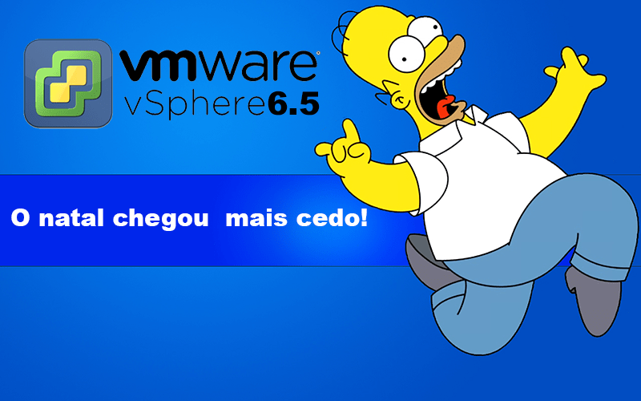

Download do novo VMware vSphere 6.5
BlogCompartilhe esse post nas redes sociais...
Olá Homelabers!
Edit:
13:10 - O post foi atualizado com uma coleção de links para download e documentação do vSphere 6.5
13:40 - Os downloads já estão disponíveis! RUN
Me desculpem a ausência aqui no blog. Tenho dedicado todo o meu tempo livre na organização da primeira reunião do VMUG São Paulo, que acontece essa semana, no dia 17/11 as 18 horas em São Paulo.
Vou fazer uma pausa no hiato para anunciar que a versão GA (General Availability) do VMware vSphere 6.5 foi lançada hoje 15/11.

Então senhores, start your Homelabs e vamos brincar com o VMware vSphere 6.5 agora em seus labs :)
Foram liberados também as novas versões dos outros componentes dos produtos de Software Defined Data Center (SDDC) : VMware vSAN 6.5, VMware vRealize Automation 7.2, VMware vRealize Log Insight 4 e VMware vRealize Operations 6.4
Para fazer o download acesse o link (veja mais abaixo)
Você pode ver quais são as novidades da nova versão do VMware vSphere 6.5 confira aqui nesse post
O vSphere 6.5 também incluirá também o recurso do vSphere Predictive DRS, que foi apresentado como Tech Preview no VMworld 2016. O DRS preditivo é uma nova tecnologia que alavanca a auto-aprendizagem e análise preditiva fornecida pelo vRealize Operations. Ele aprende seu ambiente e com base em padrões de uso, faz o rebalanceamento de suas cargas de trabalho com antecedência de futuras demandas e picos. Isso garante que seus aplicativos continuem performando e seus workloads obtenham todos os recursos de que precisam. Isso é extremamente útil em uma ampla variedade de cenários, incluindo aplicativos que são sensíveis à latência ou experimentam picos regulares na demanda. VSphere Integrated Containers, um recurso que estende os recursos do vSphere para executar workloads de contêineres em ambientes vSphere, será disponibilizado no final deste ano.
Edit: No momento de publicação desse post a versão 6.5 ainda não estava disponível para download, mas de acordo com o Adam Eckrle @eck79 (TMA do vCenter na VMware) em algumas horas o link deve ser atualizado.
https://twitter.com/eck79/status/798504080154984448
Link para o anúncio oficial aqui: https://blogs.vmware.com/vsphere/2016/10/introducing-vsphere-6-5.html
Coleção de links para o VMware vSphere 6.5
Release Notes:
* [vSphere / ESXi 6.5](http://pubs.vmware.com/Release_Notes/en/vsphere/65/vsphere-esxi-vcenter-server-65-release-notes.html)
* [vSphere Client (HTML5) 6.5](http://pubs.vmware.com/Release_Notes/en/vsphere/65/vsphere-client-65-html5-functionality-support.html)
* [vSphere Update Manager 6.5](http://pubs.vmware.com/Release_Notes/en/vsphere/65/vsphere-update-manager-65-release-notes.html)
* [Virtual SAN 6.5](http://pubs.vmware.com/Release_Notes/en/vsan/65/vmware-virtual-san-65-release-notes.html)
* [vSphere Replication 6.5](http://pubs.vmware.com/Release_Notes/en/vsphere-replication/65/vsphere-replication-65-release-notes.html)
* [vSphere Data Protection 6.1.3](http://pubs.vmware.com/Release_Notes/en/vdp/61/data-protection-613-release-notes.html)
* [vSphere PowerCLI 6.5](http://pubs.vmware.com/Release_Notes/en/powercli/65r1/vmware-powecli-65r1-release-notes.html)
* [vSphere vMA 6.5](http://pubs.vmware.com/Release_Notes/en/vima/65/vsphere-vma-65-release-notes.html)
* [vSphere CLI 6.5](http://pubs.vmware.com/Release_Notes/en/vcli/65/vsphere-65-vcli-release-notes.html)
* [vSphere Management SDK 6.5](http://pubs.vmware.com/Release_Notes/en/developer/vsphere-mgmt-sdk/65/vsphere-management-sdk-65-overview.html)
* [vSphere Web Services SDK 6.5](http://pubs.vmware.com/Release_Notes/en/developer/vsphere-mgmt-sdk/65/vsphere-web-services-sdk-65-release-notes.html)
* [vCenter Server Appliance Management API](http://pubs.vmware.com/Release_Notes/en/developer/vcsa-api/65/vcenter-server-appliance-api-65-release-notes.html)
* [vSphere Automation SDK for Java 6.5](http://pubs.vmware.com/Release_Notes/en/developer/vapi/65/vsphere-automation-sdk-65-java-release-notes.html)
* [vSphere Automation SDK for .NET 6.5](http://pubs.vmware.com/Release_Notes/en/developer/vapi/65/vsphere-automation-sdk-65-net-release-notes.html)
* [vSphere Automation SDK for REST 6.5](http://pubs.vmware.com/Release_Notes/en/developer/vapi/65/vsphere-automation-sdk-65-rest-release-notes.html)
* [vSphere Automation SDK for Python 6.5](http://pubs.vmware.com/Release_Notes/en/developer/vapi/65/vsphere-automation-sdk-65-python-release-notes.html)
* [vSphere Automation SDK for Perl 6.5](http://pubs.vmware.com/Release_Notes/en/developer/vapi/65/vsphere-automation-sdk-65-perl-release-notes.html)
* [vSphere Automation SDK for Ruby 6.5](http://pubs.vmware.com/Release_Notes/en/developer/vapi/65/vsphere-automation-sdk-65-ruby-release-notes.html)
* [Virtual Disk Development Kit (VDDK) 6.5](http://pubs.vmware.com/Release_Notes/en/vddk/65/vsphere-vddk-65-release-notes.html)
* [OVFTool 4.2](http://pubs.vmware.com/Release_Notes/en/developer/ovf/65/vmware-ovftool-420-release-notes.html)
Downloads:
* [ESXi 6.5](https://my.vmware.com/group/vmware/get-download?downloadGroup=ESXI650)
* [vCenter Server (Windows/VCSA) 6.5](https://my.vmware.com/group/vmware/get-download?downloadGroup=VC650)
* [vSAN Witness Appliance 6.5](https://my.vmware.com/group/vmware/get-download?downloadGroup=WITNESS-OVA-65)
* [vSphere Replication 6.5](https://my.vmware.com/group/vmware/get-download?downloadGroup=VR65)
* [Site Recovery Manager 6.5](https://my.vmware.com/group/vmware/get-download?downloadGroup=SRM65)
* [vSphere Data Protection 6.1.3](https://my.vmware.com/group/vmware/get-download?downloadGroup=VDP613)
* [vRealize Log Insight 4.0](https://my.vmware.com/group/vmware/get-download?downloadGroup=VRLI-400-VCENTER)
* [vSphere PowerCLI 6.5](https://my.vmware.com/group/vmware/get-download?downloadGroup=PCLI650R1)
* [vSphere vMA 6.5](https://my.vmware.com/group/vmware/get-download?downloadGroup=VMA65)
* [vSphere CLI 6.5](https://my.vmware.com/group/vmware/get-download?downloadGroup=VS-CLI-65)
* [vSphere Management SDK 6.5](https://my.vmware.com/group/vmware/get-download?downloadGroup=VS-MGMT-SDK65)
* [vSphere Automation SDK for Java 6.5](https://my.vmware.com/group/vmware/get-download?downloadGroup=VS-AUTOMATIONSDK-JAVA65)
* [vSphere Automation SDK for .NET 6.5](https://my.vmware.com/group/vmware/get-download?downloadGroup=VS-AUTOMATIONSDK-DOTNET65)
* [vSphere Automation SDK for REST 6.5](https://my.vmware.com/group/vmware/get-download?downloadGroup=VS-AUTOMATIONSDK-REST65)
* [vSphere Automation SDK for Python 6.5](https://my.vmware.com/group/vmware/get-download?downloadGroup=VS-AUTOMATIONSDK-PYTHON65)
* [vSphere Automation SDK for Perl 6.5](https://my.vmware.com/group/vmware/get-download?downloadGroup=VS-AUTOMATIONSDK-PERL65)
* [vSphere Automation SDK for Ruby 6.5](https://my.vmware.com/group/vmware/get-download?downloadGroup=VS-AUTOMATIONSDK-RUBY65)
* [vSAN Management SDK (.NET, Java, Ruby, Perl & Python ) 6.5](https://my.vmware.com/group/vmware/get-download?downloadGroup=VSAN-MGMT-SDK65)
* [Virtual Disk Development Kit (VDDK) 6.5](https://my.vmware.com/group/vmware/get-download?downloadGroup=VDDK65)
* [vSphere Web Client SDK 6.5](https://my.vmware.com/group/vmware/get-download?downloadGroup=WEBCLIENTSDK65)
* [OVFTool 4.2](https://my.vmware.com/group/vmware/get-download?downloadGroup=OVFTOOL420)
Documentation:
* [vSphere 6.5](http://pubs.vmware.com/vsphere-65/index.jsp)
* [vSphere 6.5 (SOAP) API Reference Guide](http://pubs.vmware.com/vsphere-65/index.jsp?topic=%2Fcom.vmware.wssdk.apiref.doc%2Fright-pane.html)
* [vSAN 6.5 API Reference Guid](http://pubs.vmware.com/vsphere-65/index.jsp?topic=%2Fcom.vmware.vsan.apiref.doc%2Fright-pane.html)e
Valdecir Carvalho
Nerd e pai orgulhoso da Mariana e João. Profissional Sênior de TI com foco em arquitetura de infraestrutura e cloud computing. Blogueiro, podcaster, palestrante, amante de comunidades técnicas, fotógrafo aposentado e adora jogos antigos.
#vExpert · #VMUGLeader · #VUGBrasil · #vBronwBagBrasil · #VeeamVanguard